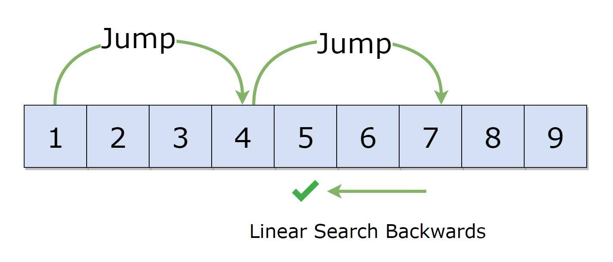

Illustration

Like Binary Search, Jump Search is a searching algorithm for sorted arrays. The basic idea is to check fewer elements (than linear search) by jumping ahead by fixed steps or skipping some elements in place of searching all elements.
For example, suppose we have an array arr[] of size n and block (to be jumped) size m. Then we search at the indexes arr[0], arr[m], arr[2m]…..arr[km] and so on. Once we find the interval (arr[km] < x < arr[(k+1)m]), we perform a linear search operation from the index km to find the element x.
Let’s consider the following array: (0, 1, 1, 2, 3, 5, 8, 13, 21, 34, 55, 89, 144, 233, 377, 610). Length of the array is 16. Jump search will find the value of 55 with the following steps assuming that the block size to be jumped is 4.
Time Complexity : O(√n)
Space Complexity : O(1)